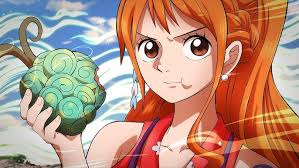

Zoro

Zoro es de esos que no hablan mucho, pero lo dicen todo con una mirada. Se pierde en el camino, pero nunca en su objetivo. Puede estar hecho polvo, sangrando, tirado… pero si prometió algo, lo va a cumplir aunque tenga que arrastrarse con las espadas entre los dientes.
Luffy

Luffy puede parecer distraído, impulsivo o incluso ingenuo… pero su corazón entiende lo que otros complican con palabras. Su fuerza no está solo en sus puños, sino en su fe inquebrantable en los sueños, en la amistad y en la libertad. A veces actúa como un niño… pero es ese niño el que inspira a todos a seguir adelante.
Nami

Nami aprendió a confiar cuando ya no le quedaban razones para hacerlo. Su mirada siempre está un paso adelante, calculando rutas, riesgos y corazones. No necesita fuerza bruta para abrirse camino; su mente es el mapa que guía al caos hacia el equilibrio. Y aunque diga que solo le importan las berrys, su lealtad vale más que cualquier tesoro.
Sanji
Sanji vive entre el fuego de la cocina y el de la batalla, pero nunca quema lo que de verdad importa: su elegancia, su orgullo y su corazón. Es un caballero que sangra por amor y pelea por respeto. Aunque esconda su dolor detrás de un encendedor y una sonrisa torcida, su mayor fuerza es cuidar, incluso cuando nadie se lo pide.